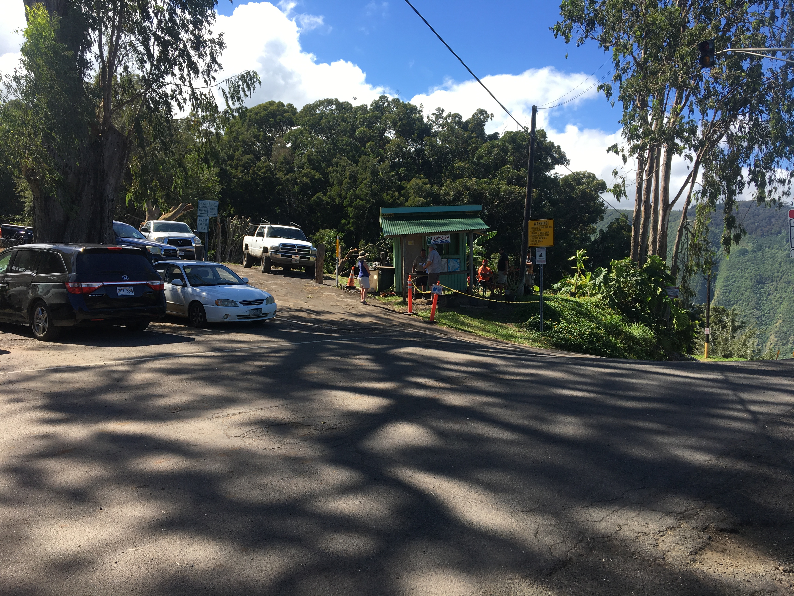

The Waipio lookout is the first whole view to the valley. Information about the hill and cruising around valley can be found at informatiion officer booth at top of hill. Usually open from 7am to 4pm every day. This hill has 25% grade, or steeper, for 3/4 of a mile. This paved public road is the steepest road of its length in the United States.
